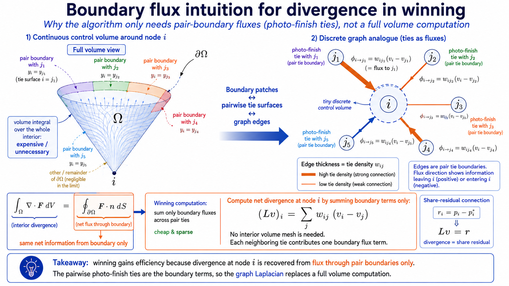
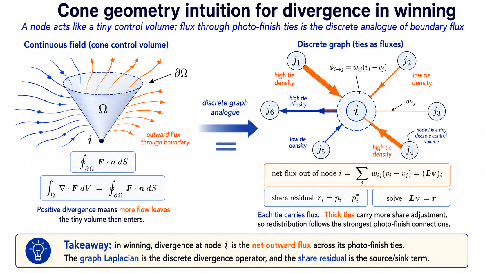
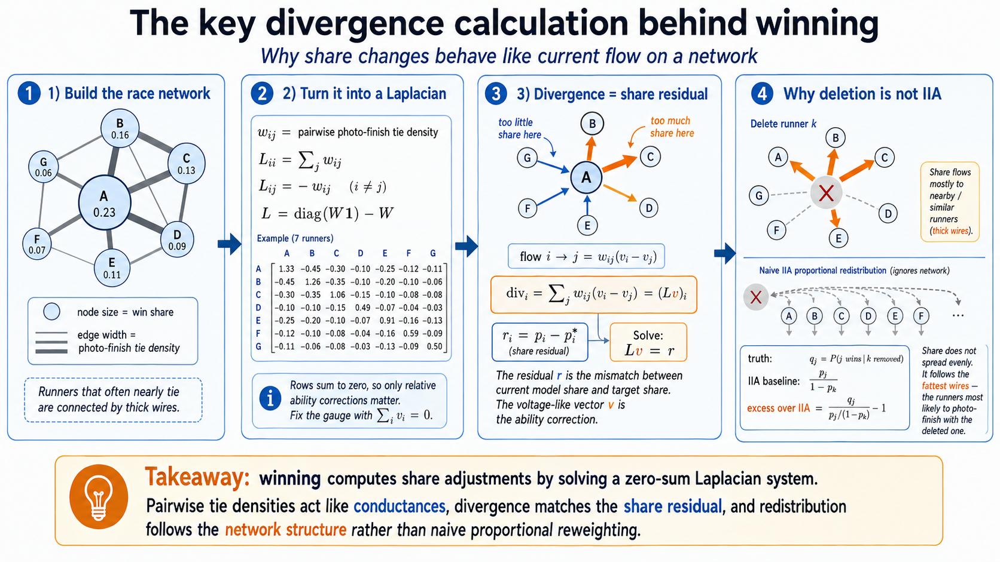
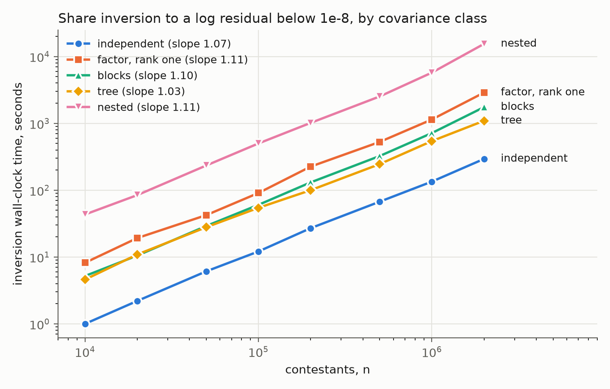

How it works
The package prices and inverts contests (races, choices, markets) at scales where the standard methods give out. The choice event is one-dimensional, so one shared field prices every contestant at once. Correlation enters by conditioning, so it costs a low-dimensional quadrature rather than an \(n\)-dimensional one. The Jacobian is a boundary flux, which makes inversion a convex program on a graph.
Each of these ideas has a history, credited in its section below. The full derivations and every measured number are in the paper.
1. A race is decided at the winning time
Give contestant \(i\) a running time \(X_i\) with density \(f_i\) and survival \(S_i\) (min wins; a choice model is the same thing with utilities negated). However many contestants there are, contestant \(i\) wins by finishing at some time \(x\) with everyone else still out on the course:
\[ p_i \;=\; \int f_i(x)\prod_{j\ne i}S_j(x)\,dx . \]That integral is one-dimensional no matter how large \(n\) is, an observation as old as the subject. Domencich and McFadden wrote the general random-utility choice probability as a one-dimensional integral over the winning utility in 1975, with the caveat that its integrand generally conceals a multivariate calculation. Under independence the integrand really is a density times a product of univariate CDFs, and that one-dimensional quadrature has been standard ever since.
The smooth methods of the correlated-probit literature (GHK, Genz's quadrature, minimax tilting) treat \(p_i\) as an \((n-1)\)-dimensional orthant integral and pay for that view one alternative at a time (frequency simulation does return the whole vector per draw, but is not smooth in the parameters). Even the independent one-dimensional view, evaluated per alternative, re-forms an \((n-1)\)-fold product \(n\) times, which is where the representation stops being an algorithm.
The computational trick is that the product is shared. Build the log survival field \(L(x)=\sum_j \log S_j(x)\) once on a lattice, and each contestant's leave-one-out product is a subtraction rather than a rebuilt product:
\[ \prod_{j\ne i}S_j(x) \;=\; e^{\,L(x)-\log S_i(x)} . \]One pass over the lattice prices all \(n\) contestants, at cost \(O(nL)\) for \(L\) lattice points. Working in logs is also what keeps hopeless contestants finite: in the far tail the product of survivals underflows to zero and a division would return \(0/0\), while a difference of logs simply decays to nothing.
The lattice itself is placed on the winner's bulk (the region where the race is actually decided) rather than across the ability span, which is why 33 well-placed points can beat 500 badly placed ones.
2. Correlation enters by conditioning
Independence looks like a strong assumption, and the escape is old and simple: find shared variables that make the contestants conditionally independent, price the independent race at each value of the shared variables, and average. For the factor model \(X=\mu+Vf+\mathrm{diag}(\sqrt D)\,\epsilon\),
\[ p \;=\; \sum_q w_q\, p^{\mathrm{ind}}(\mu+Vf_q) , \]a \(Q\)-node quadrature over the shared luck \(f\), each node one run of the shared-field pass: \(O(nLQ)\) in total. The package's covariance grammar is the set of structures for which this works exactly: a global factor, rank-\(r\) effects per cluster (teams, sectors), a global factor over clusters (markets), and trees of uniform shared effects (hierarchies). A fitted reduction handles dense matrices.
The one-dimensional representation dates from 1975, conditioning on a factor is forty years old, the common-survival field itself is classical competing-risks calculus, and the log-domain lattice engine that evaluates and inverts it for all \(n\) at once is the 2021 paper this package began as. The package organizes these pieces so that one field pass prices all \(n\) correlated alternatives and applies their dense tie-density Jacobian in linear work, removing the one-alternative-per-integral repetition that GHK, Genz's quadrature, and minimax tilting all pay.
3. The Jacobian is a boundary flux
Everything downstream (calibration, counterfactuals, ratings) needs derivatives: how does every win probability move when one ability moves? The answer can be read off the geometry of the winning regions.
An outcome of the race is a point \(x\in\mathbb{R}^n\), one finishing value per contestant. Contestant \(i\) wins on the cone \(R_i=\{x: x_i\le x_k\ \text{for all } k\}\), and these cones tile the space. Two cones meet where two contestants dead-heat ahead of the field: the photo-finish face \(F_{ij}\).
The tool is the divergence theorem. For a continuously differentiable vector field \(\mathbf{F}\) on a region \(\Omega\subset\mathbb{R}^n\) with piecewise-smooth boundary \(\partial\Omega\) and outward unit normal \(n\),
\[ \int_{\Omega} \nabla\!\cdot\!\mathbf{F}\; dV \;=\; \oint_{\partial\Omega} \mathbf{F}\cdot n \; dS . \]Whatever a field does inside a region is accounted for by what crosses its boundary. Here it is applied with \(\Omega = R_i\) and \(\mathbf{F} = q_\mu\, e_j\), the joint density times the \(j\)-th coordinate vector, so \(\nabla\!\cdot\!\mathbf{F} = \partial q_\mu/\partial x_j\). Because abilities only translate the density, \(\partial q_\mu/\partial\mu_j = -\,\partial q_\mu/\partial x_j\), and the cone \(R_i\) does not depend on \(\mu\), so
\[ \frac{\partial p_i}{\partial \mu_j} \;=\; -\int_{R_i} \frac{\partial q_\mu}{\partial x_j}\, dx \;=\; -\oint_{\partial R_i} q_\mu\, n_j \, dS . \]The boundary of the cone decomposes into its photo-finish faces plus a sphere at infinity whose contribution vanishes (the density decays fast enough). On the face \(F_{ik}\) the outward normal is \((e_i-e_k)/\sqrt2\), whose \(j\)-th component is zero unless \(k=j\), so every face drops out except the one shared with \(j\):
\[ \frac{\partial p_i}{\partial \mu_j} \;=\; \frac{1}{\sqrt 2}\int_{F_{ij}} q_\mu\, dS \;\ge\; 0 , \qquad j\ne i . \]Slowing \(j\) pushes probability out of \(j\)'s winning region, and all of it crosses into the neighbouring cones through the surfaces where photo finishes happen. The derivative is the tie density. Müller, Nesterov and Shikhman (2019) derived that identity for general joint laws by differentiating the surplus function; the flux picture above reaches it independently by geometry. The package adds that picture and, below, the shared-field factorization that applies the resulting dense matrix without constructing its \(O(n^2)\) edges.

Three structural facts follow from the same picture. The face \(F_{ij}\) is one surface shared by two cones, so the Jacobian is symmetric. What leaves one cone enters its neighbours, so each row sums to zero. That is a conservation law, which is translation invariance: slowing everyone equally changes nothing.
Together those two facts identify the matrix completely, and this is a two-line argument rather than a named theorem. Take the off-diagonal entries as edge weights, \(w_{ij} = \partial p_i/\partial\mu_j \ge 0\), symmetric because the face is shared. The rows summing to zero then force each diagonal entry to be the negative sum of its row's edge weights, so the diagonal holds no free information. A matrix of exactly that form, minus degrees on the diagonal and weights off it, is what weighted graph Laplacian means (up to our sign convention), so the Jacobian is one:
\[ J \;=\; -B^{\top} W_e B , \qquad (Jh)_i \;=\; \sum_{j\ne i} w_{ij}\,(h_j-h_i) , \]with \(B\) the incidence matrix of the photo-finish graph and \(W_e\) the diagonal of tie densities.
The dense matrix above never has to be built, because its weights factor through the field. Write \(A_i(x)=f_i(x)/S_i(x)\) for the hazard and \(G(x)=\prod_k S_k(x)\) for the field; then \(w_{ij}=\int G\,A_i A_j\,dx\), and
\[ (Jh)_i \;=\; \int G(x)\,A_i(x)\Bigl[\textstyle\sum_j A_j(x)h_j \;-\; h_i\sum_j A_j(x)\Bigr]\,dx , \]where the two inner sums are shared across every contestant. A graph with \(\binom{n}{2}\) potential edges is applied in \(O(nL)\), the cost of pricing, without one edge being formed. That cancellation is the cavity trick of the forward pass applied to derivatives.
Generic automatic differentiation does not supply it unaided: Pearlmutter (1994) prices a Hessian–vector product at the cost of a gradient, but differentiating the per-alternative evaluators the literature had returns the \(O(n^2L)\) it started with. The missing piece was the cheap object to differentiate, and that object is the field.
The race is a resistor network, and the correspondence is exact. Assign node \(i\) a potential \(v_i\) (the ability correction the inversion is solving for) and give the edge \(ij\) conductance \(w_{ij}\) (the tie density). Ohm's law says the current from \(i\) to \(j\) is \(w_{ij}(v_i-v_j)\); Kirchhoff's current law says the net current out of node \(i\) equals whatever is injected there externally. Summing Ohm's law over \(i\)'s neighbours gives net outflow \(\sum_j w_{ij}(v_i-v_j) = (Lv)_i\), so Kirchhoff's law is the graph Laplacian applied to the potentials.
In the inversion the injected current at node \(i\) is the share residual \(r_i = p_i - p_i^\star\), the surplus probability that has to flow away from \(i\) through its photo-finish edges, and one Newton step solves the circuit \(Lv = r\) for the potentials. Even the gauge matches: potentials are defined up to a constant, which is why only ability contrasts are identified, and fixing the mean to zero is choosing the ground node.

4. Inversion is a convex program
The inverse problem (given a probability vector, find the abilities) uses this geometry, and none of the convexity is ours. Let \(W(\mu)=\mathbb{E}\min_i(\mu_i+\epsilon_i)\), the expected winning time. That its gradient is the probability vector is the Williams–Daly–Zachary theorem of discrete choice; that share inversion is therefore an unconstrained convex program was made explicit by Li (2018). The Hessian is the negative tie-density Laplacian, whose structure Müller, Nesterov and Shikhman had by 2019. It is strictly negative definite on the space of contrasts whenever every pairwise tie density is positive (the photo-finish graph connected), which the Gaussian factor model guarantees when every contestant keeps idiosyncratic noise. So
\[ \max_\mu \; W(\mu) - \langle p^\star, \mu\rangle \]is, for a target \(p^\star\) in the interior of the simplex (\(p^\star_i > 0\) for every \(i\), \(\sum_i p^\star_i = 1\)), a strictly concave, coercive program whose unique mean-zero maximiser is the inversion: the abilities exist and are unique up to a common shift.
The interior condition is necessary. With full-support noise every contestant wins with positive probability at every finite ability vector, so a target with some \(p^\star_i = 0\) has no finite inverse: the supremum is approached only as the contrast diverges. Flooring such a target gives a finite approximation whose contrast diverges as the floor tends to zero.
The pair of oracles the field supplies is ours. The demonstrated million-contestant inversions (about eighty seconds) run a damped coordinate iteration preconditioned by the own-coordinate slopes the field pass returns for free. The iteration takes a handful of passes and no linear algebra.
The same field also exposes the exact matrix-free
Jacobian–vector product of the previous section, which makes
Newton–Krylov methods possible without constructing the dense
Jacobian. Measured naively (the committed exp23), that
route currently loses to the diagonal iteration by two orders of
magnitude. A competitive Newton–Krylov solver is therefore solver
engineering still to do, not a capability the oracle lacks.
The program also has an economic reading, noted in the original paper (Cotton 2021). \(W(\mu)\) is the expected winning time, so \(\partial W/\partial\mu_i = p_i\) says that paying to make contestant \(i\) faster improves the expected winning time at a rate equal to \(i\)'s win probability: the win probabilities are the shadow prices of ability, and inversion is the equilibrium question run backwards: find the ability vector at which the observed shares are exactly those shadow prices.

Performance
Timings in this first list are those of the paper, measured on a Mac Studio (M3 Ultra) with one BLAS thread.
- Forward pricing. All-\(n\) probabilities under a rank-one factor in 0.12, 1.2 and 18 seconds at \(n=10^4, 10^5, 10^6\); a ten-million contestant block field in 102 seconds.
- Inversion. \(n=10^6\) in 105 seconds independent and about twelve minutes rank-one; round trips reach a log residual below 1e-8.
- Against GHK. Our own GHK simulator at \(n=200\) and ten thousand draws is over 100× slower for the complete vector.
- Any smooth base. Normal, Gumbel (softmax is the closed-form special case, reproduced to 1e-15), logistic, Laplace, Student-t, skew-normal, or your own callable.
Inversion time by covariance class
One field of each class was inverted at each size from ten thousand to two million contestants. The target is the forward map's own output, so each run is a round trip. Every run converged to a log residual below 1e-8.

Inversion time, with the number of sweeps in parentheses:
| \(n\) | independent | factor, rank one | blocks | tree | nested |
|---|---|---|---|---|---|
| 10,000 | 1.0 s (8) | 8.2 s (33) | 5.2 s (23) | 4.6 s (18) | 43 s (24) |
| 20,000 | 2.2 s (9) | 19 s (36) | 11 s (23) | 11 s (21) | 1.4 min (24) |
| 50,000 | 6.1 s (10) | 42 s (34) | 29 s (25) | 28 s (21) | 3.9 min (26) |
| 100,000 | 12 s (10) | 1.5 min (36) | 1.0 min (26) | 54 s (20) | 8.3 min (27) |
| 200,000 | 27 s (11) | 3.8 min (41) | 2.2 min (28) | 1.7 min (19) | 17 min (28) |
| 500,000 | 1.1 min (11) | 8.8 min (41) | 5.4 min (28) | 4.1 min (19) | 42 min (28) |
| 1,000,000 | 2.2 min (11) | 19 min (39) | 12 min (30) | 9.0 min (20) | 1.6 h (30) |
| 2,000,000 | 4.9 min (12) | 48 min (46) | 29 min (31) | 18 min (21) | 4.3 h (31) |
These runs were made on an Apple M1 Ultra (20 cores, 64 GB) that
was running other jobs at the same time, with load averages between
20 and 50. The times are therefore slower than the paper's and
should be read for their growth with \(n\), not their level. The sweep counts and
residuals do not depend on the machine. To reproduce:
python invert_structures.py N for each size, then
python plot_inversion_scaling.py, both in the paper's
source directory;
MANIFEST.md there gives the seeds and the committed
log.
What the comparison methods reach
The standard quadrature routine in R, pmvnorm in
mvtnorm, is documented for at most a thousand
dimensions and refuses larger problems.
A complete probability vector costs GHK \(n\) runs, one per alternative, and the cost of each run grows with \(n\). We ran our own GHK up to \(n=1000\), where the complete vector takes 194 seconds at ten thousand draws. The table below extrapolates the two measured cost exponents (1.9 and 2.9) from that point. The extrapolation exists here only to give a very rough sense of the impracticality of using prior art methods for large \(n\).
| \(n\) | lattice forward pass, measured | GHK at \(10^4\) draws, extrapolated |
|---|---|---|
| 10,000 | 0.12 s | 4.3 hours to 1.8 days |
| 100,000 | 1.2 s | 14 days to 3.9 years |
| 1,000,000 | 18 s | 3.1 to 3,100 years |
GHK was not run at these sizes. Each range is an extrapolation, not a measurement, and spans one to three orders of magnitude.
The paper carries the derivations, the accuracy referees, and the failure modes as measured, and its manifest maps the tables and numbers to commands and seeds. To see the machinery run: watch the lattice converge against GHK and Mendell–Elston on a wall-clock axis, fit a correlated race in the browser, or inspect the photo-finish circuit directly.